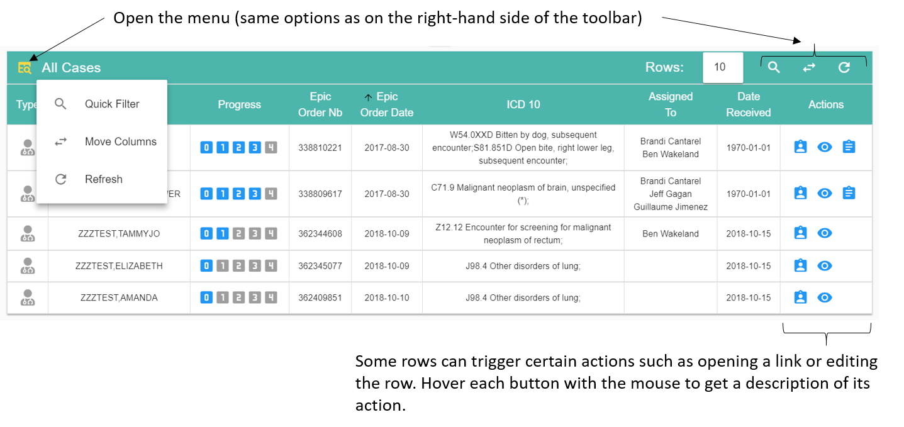
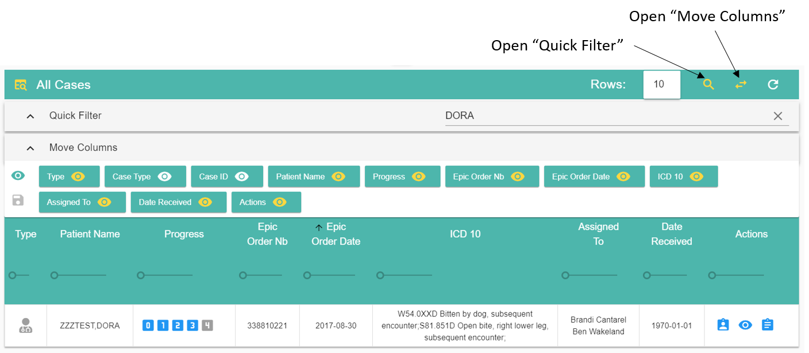

Using Tables¶
Most data tables have the same features. Some tables have extra options described in their own section.
 A yellow button indicates that it’s currently active (or not hidden). Click on the button again to deactivate the function or hide the menu.
The Quick filter bar can search for any term in the table, even in hidden columns. Only rows containing the search string will be displayed.
The Move Column bar can reorder columns (drag and drop with the mouse) as well as show or hide a column. You can also change the width of each column by moving the ruler under each column header (experimental). You can save the current layout of the table by clicking the save button located on the left of the bar.
Most columns can be sorted (no nested sort though) by clicking on the column header.
Rows: 10 indicates the number of rows visible. You can change the number to display more rows but large numbers (100+) might slow down the interface.
In most situations you can display a button’s functionality by hovering it with the mouse.